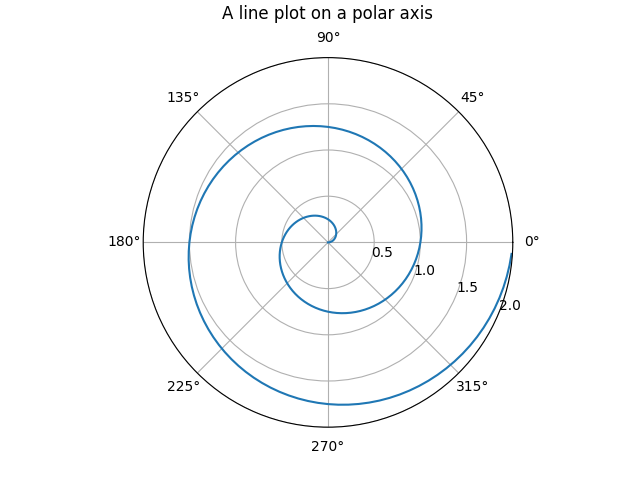

Note
Go to the end to download the full example code
12.3.10.1.17. Polar axis#
Demo of a line plot on a polar axis.
import numpy as np
import matplotlib.pyplot as plt
r = np.arange(0, 2, 0.01)
theta = 2 * np.pi * r
plt.figure()
ax = plt.subplot(111, projection="polar")
ax.plot(theta, r)
ax.set_rmax(2)
ax.set_rticks([0.5, 1, 1.5, 2]) # less radial ticks
ax.set_rlabel_position(-22.5) # get radial labels away from plotted line
ax.grid(True)
ax.set_title("A line plot on a polar axis", va="bottom")
plt.show()
Total running time of the script: ( 0 minutes 0.067 seconds)